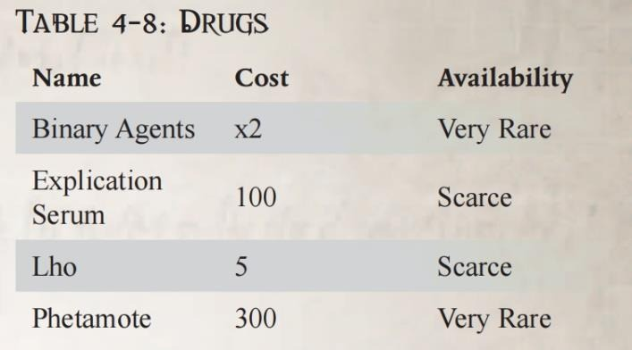

这种简单的机魂通常存在于一个特殊的数据板中，与所有其他可能的逃生手段隔绝。如果插入适当的数据端口，它可以击败许多安全系统。这些设备在吞噬了它们所放置的系统后，会自行耗尽。入侵机魂在入侵或技术应用检定中提供一次性的+30 的奖励，以击败带有数据端口的锁或安全系统。
请记住，大多数系统都装有入侵门，可将此类入侵造成的损害限制在局部区域，因此，入侵机魂可能只能打开一扇门或关闭另一侧的图像投射器，但无法打开一栋商人住宅西翼的所有门。
机械神教对入侵之灵的使用存在分歧，有人认为它们非常有用，也有人认为它们是对神圣工艺的滥用。
这种装置几乎可以连接到任何绳索或缆绳上，使用者可借助它“攀爬”绳索。它的齿轮可以用一个完整动作卡在缆绳的三个侧面，使用时需要双手操作。每次完整动作移动的速度相当于侍僧每回合的敏捷加值。使用完毕后，需要部分动作才能将装置脱离。
与收音虫非常相似，这些昆虫状构造体类似于大型蜻蜓，使用类似飞行生物的大脑和神经系统。它们也有非常有限的智力，可以执行简单的指令，例如“跟随那个有机械眼睛的女人” 或“悬停在货场上方” 。
侍僧需要一台图像投射器（5 公斤， 400 个，稀有）来观看飞虫的传输，其中也包括声音，但质量往往很差（任何基于听觉的检定会-20）。 摄像飞虫在飞行时发出一种低鸣的昆虫声，被观察者可以对其进行非常困难（-20） 的警觉检定。对于任何必要的检定，假设摄像飞虫的敏捷为 50，并具有躲藏技能。
在秘密行动、商业谈判和审判庭业务中，人们通常希望确保自己的谈话不会被窃听。为希望保持匿名的精英客户提供服务的场所有时会在特定桌子周围放置这种类型的力场发生器。这是一种公文包大小的装置，可投射半径达 5 米的场域。从对面看，场域的视觉效果与透过严重磨砂玻璃看时一样：形状可能可以分辨，但其他内容几乎无法分辨。场域完全无法穿透任何声音、语音和图像。
帝国的大多数公民都对灵能者有着根深蒂固的恐惧，不仅是因为他们带来的威胁，还因为他们能够检查或改变他人的思想。这种恐惧不仅限于普通人，甚至神圣审判庭的成员也对灵能者对隐私的威胁感到严重担忧。
灵能阻尼器不像灵能干扰器（见《审判官手册》第 190 页）那样是便携设备；它们复杂的运作方式需要占用比一些车辆更大的空间，并且需要大量的电力。这些设备用多层格子状的灵能吸收合金和灵能反应晶体纤维包围其影响区域。每个装置都有一个等级，对应于其作用范围内允许的灵能者骰子数量的减少。
该力场需要 2d5 回合才能完全生效，在此期间，任何灵能者如果成功通过普通（+10）灵能感应检定，都会注意到它的激活。阻尼器也需要 1d5 回合才能消退，在此期间保持完全效果。
这些装置极为罕见，通常情况下，侍僧无法在游戏过程中购买到它们。它们更可能作为场景的一部分出现，而不是作为装备。
这些手套、护腕和护胫可以牢牢固定在衣服或盔甲上，其表面具有极强的附着力，在大多数情况下都能极大地帮助攀爬。护膝、脚趾、前臂和手部护具会分泌一种粘性物质，可以附着在许多表面上。在攀爬混凝土、凝灰岩或其他规则表面时，它们可以带来+30 的攀爬检定加成。在碎石、碎石堆或类似物质上攀爬时，该加成会减少至+10。
该系统由一个标记物（大约有一枚王座币硬币大小）和一个追踪器（大约有鸟卜仪大小）组成，只要标记物在有效范围内，它就能指示方向和距离。在 1 公里范围内，信号将保持强劲，即使超出 2 公里，只要标记和追踪器之间没有大量石头或金属（如巢都或隧道系统） ，信号也能正常读取。追踪器背面有一层几乎能与任何材料粘合的胶，但在发现前或发现后都能被轻松取下。
收音虫字如其名，是一种拇指大小的自动装置，能够迅速到达目标，并藏匿在衣服或随身物品中。无处不在的蟑螂的皮质材料构成了其有限认知的基础，使其能够理解简单的指令，例如“藏在对面男人的衣服里” 或“爬到隔壁房间的角落里” 。它们也可以处于“惰性模式” ，此时它们的小爪子会简单地吸附在物品或物体上。
它们会将声音从所在位置忠实地传输到任何调谐到适当频率的音阵发射器或通讯微珠。然而，它们的传输范围有限，只能传输到 1 公里以外。对于任何需要到的情况，请考虑将其敏捷设为 40， 并添加躲藏技能。
该设备大小与背包相当，可指示音阵传输的方向和大概距离。在语音流量过大导致无法从其他信号中解析出单个信号的位置的情况下，该追踪器不起作用。拦截器阵列需要 2d5 回合才能组装完成，且必须位于信号强度允许接收的位置。所获信息的质量取决于技术应用检定的成功度：
| 成功度 | 信息质量 |
|---|---|
| 基础成功 | 大致方向，比如“ 西南方”或“东北方”，生效范围为 1d5 千米。 |
| 1-2 成功度 | 在+/-10 度范围内的方向，生效范围为 1d5×100 米。 |
| 3+成功度 | 在+/-2 度范围内的方向，生效范围为 1d5×10 米。 |
“我之所以能继续为帝皇效命，是因我更重视守护灵魂，而非血肉之躯。”
—— 审判官奥姆・奎尔(Om Quall)
虚境护符是一种虚无场（null-feld）投射器，也是搭载机魂沉思核心的装置，虚境护符专为护甲、便携式盾牌及同类装备设计。将亚空间能量熔铸于机械的至高天技师们深知必须从腐蚀性的亚空间能量中保护自身，故而钻研异端的古代技术，即如何锻造能引导亚空间之力的机魂。因此至高天技师们极少会因为亚空间之力陷入疯狂，至少起初如此。
为护甲加装虚境护符时，整个仪式与机魂的锻铸周期会十分漫长。护符成品为圆环形的咒印，两道外部轮廓均由嵌入浅槽的细银缆勾勒而成，虚无场投射器与沉思核心则隐藏在咒印中心的下方。护符内的强大机魂平日处于休眠状态，只有感知到亚空间波动时才会苏醒；当激活时，银缆会散发出紫色微光的烟雾——源自至高天能量的雾气。
长久以来，至高天技师将虚境护符作为契约信物赠予盟友。这也是为了确认对方是否愿意接纳黑暗技术，以此换取他们的忠诚。也正因如此，在正统的机械神教眼中，这枚护符是被驱逐的至高天技师的可憎标志。例如索莱克斯教
派的好战贤者（Magos-militant），他们指挥着辅军精锐的猎杀集群（hunter-cohorts）在卡利西斯扇区全境追杀佩戴这枚异端印记之人。哪怕只是与虚境护符的持有者有所牵连，都可能殒命于机械教之手；更糟糕的下场是被好战贤者的拷问机械缠上，在无尽折磨中迎来短暂的生命终点。
虚境护符的机魂会为持有者提供亚空间暴露方面的防护，可抵消最多 6 点因直接接触亚空间物质所获得的堕落点，每次接触时均可触发一次该效果，但护符对其他来源的堕落无效。此外，护符还能抵消最多 6 点由灵能力量造成的伤害。加装了虚境护符的护甲部位，在抵御恶魔攻击、立场武器及纯亚空间能量造成的伤害时，可获得额外 6 点护甲。
被逐出愤怒港（Port Wrath）锻造区的玛琉格利斯派技术异端曾对麾下工人施行一种突变性生物锻铸术。此举既是为了提高生产配额，也是为了从肉体到灵魂地彻底控制工人们。随着生物锻铸术的起效，工人们会对一种被掺入口粮的稀有合成钷素（即萘素）产生依赖，而这一物质正是由他们的主人所投放的。久而久之，非自然的生物微粒会在工人体内滋生，以恐怖的方式扭曲神圣的人类形体：工人皮肤下生出凹凸不平、如有机塑料般的硬块，血肉中也会交织着这种坚韧物质的纤维，眼球与黏膜同样会被这种塑料质物浸透。短短数周内，这些工人便能赤身进入太空、硬抗重击，即便身负重伤也能存活。但是体内的生物微粒与塑料质增生会逐渐失控，随着血肉被彻底重塑，躯体呈现出骇人的突变样貌，最终自我反噬，造成惨不忍睹的结果。塑料质物在脑部凝结、挤压重要脏器，或冲破皮肤，化作脊状凸起、尖角与瓣状物，而受试工人则会一边流涎一边在剧痛中死去。没过多久，这群异端的亵渎行径再也无法被掩盖，最终他们迎来了应有的惩罚。
尽管这种恐怖的生物锻铸术最终是失败的，但是那些权贵阶层却仍被 “重塑躯体” 这种可能性所诱惑。他们既想为自己的 “钦定仆从” 施展此术，甚至又妄图用于自身。即便神圣审判庭与机械教明令禁止，这项亵渎技术的秘密仍扩散到了多个世界。在其拥护者眼中，生物锻铸术是无上的机遇——血肉被雕琢重塑，强大的新器官在体内生长，心智被扭曲后反而获得了非凡的专注与清明。突破先天基因的桎梏，难道不是一件崇高的事吗？但在人类帝国看来，这样的想法正是通向技术异端罪与死罪的不归路。
玛琉格利斯生物锻铸术会赋予受试者以下特性，在首次生物外科植入术后，需经过 1d5 周才会完全生效：
术后数周内，受术者的外表几乎无明显变化。即便其血肉已化作坚甲。但如果没有技术异端修士的持续干预，玛琉格利斯生物微粒终将吞噬躯体。每过一个月，如果未接受至少一次清除多余的塑料质物或抑制生物微粒的痛苦治疗，受术者的敏捷、智力、魅力属性将各永久降低 1d5 点。若某一项属性以此种方式累计降低 10 点，受术者便再也无法伪装成基因纯净者，因为他的血肉的扭曲已无法掩盖。
在卡利西斯星区，长久以来流传着一类能够强占机魂、亵渎数据相关的黑暗知识。尽管机械神教竭力压制，异端沉思（cogitation heresy）行径仍屡禁不止；阴影中，总有源源不断的技术异端继续着他们的邪恶勾当。帝国中许多权贵极度渴望不受限制地获取秘密数据，以至于他们不惜转向禁忌的沉思学问（cogitation lore），而心思缜密的技
术异端靠利用这些非法欲望做大做强。
这类能掠夺数据宝库的科技装置，与异端音阵、未认证灵能者及千种违禁品一起通过黑色走私渠道在卡利西斯星区蔓延。戈尔根纳次星区巢都的犯罪男爵将其称作沉思者谋杀器。即便是外行人，也能使用它洗劫沉思者阵列中的机密数据，杀死其中的机魂，只留下一片冒着热气的废铁。此般行径是机械神教的大忌，索尔克斯教派的猎杀集群（hunter-cohorts）对任何涉嫌与这些邪恶装置有关之人都不会手下留情。
沉思者谋杀器的主流型制由大异端诺门・莱因（Nomen Ryne）的信徒打造，那是一群在巢都世界马尔菲散播禁忌沉思学问的邪教。许多他们的玷污造物均采用了第十三沉思模式，这是一种异端的设计，无论被用于何种目的，都是为欧姆尼赛亚所憎恶的。莱因式沉思者谋杀器的外形为一块厚重的铜壳数据板，上面精美地印着凸起的卷轴花纹和小天使雕饰。机身还刻着称颂诺门・莱因为圣徒的赞美诗，以及莱因所著的《机械教戒律》诗句。
要成功使用沉思者谋杀器，需通过挑战（+0）难度技术应用检定。在使用前，需先以数据导管缆将这台异端装置与目标沉思者或数据宝库相连接。一旦激活，沉思者谋杀器会提取并解密至少一部分与使用者输入的程式描述最匹配的数据，随后将其余所有内容彻底销毁，之后目标装置将彻底报废。目标的沉思核心会被烧焦、机魂被谋杀、所有数据化为乌有。
那些最为强大的机魂：如虚空舰、机械教神殿或上古科技装置的机魂能够免疫沉思者谋杀器的侵蚀。如果有人妄图亵渎它们，复仇便会迅速降临。他们将面对成怒不可遏的技术神甫与机械教激进份子们。
大异端、前逻辑学者阿米库斯・托尔（Ammicus Tole）给卡利西斯星区带来了诸多技术畸变（tech-perversions），预言仪便是其中之一，这是一种能预知未来的装置。它的主体是一枚倒置的铁制钟摆，悬挂于环形金属架围成的腔体中，周遭环绕着一圈看似毫无意义的机械结构。整台装置小到可单手携带，其表面或许还刻有亵渎符号或异端文本。钟摆会随周遭环境的变化而摆动震颤，它极为敏感，尤其是对至高天边界的能量潮汐。
预言仪的制造图纸被加密暗置在阿米库斯・托尔所著的仪式祷文集残卷中；使用密钥解密后，便能看到一旁潦草书写的堕落操作仪式。预言仪的秘密在于通过扰动亚空间边界，引导钟摆指向揭示未来的启示。独眼巨星（Cyclopea）上沧桑的技术女巫（tech-witch）、阿米库斯・托尔的信徒，便是通过其导师著作中的血祭与狂乱仪式来实现这一效果。一些被压制的技术异端派系，如至高天技师或许能找到其他实现目的的方法，但预言仪的核心终究是一件靠死亡与苦难驱动的装置。
托尔的仪式需要八名人类祭品，需以多种令人不适的特定方式献祭，同时还需要另外八名陷入兴奋状态的参与者。鲜血需要被四处泼洒，涂抹在预言仪上，并向伪神献上祷言。想要预知未来的技术女巫，会在装置四周的方位以献祭之血绘制诡异的印记。每个印记的含义由女巫自行定义，对应此项技术巫术（tech-sorcery）所允许提出的八个问题。当仪式达到高潮时，预言仪的钟摆会摆向某一枚咒印，对应的问题的真解将会被揭晓。
有很多黑暗的传言，据说某些激进派审判官为寻求预知能力，不惜动用阿米库斯・托尔的巫术，甚至使用更加邪恶的手段。他们所踏上的是一条通往毁灭的黑暗恐怖之路：
预言仪所展现的是使用者未使用该装置时原本会发生的未来。使用者虽能采取行动改变未来，但片面的预知并不能保证这样的行为一定能成功。神秘学典籍中满是此类例子，无论传说还是现实，那些试图规避预言的行为，最终反倒促成了预言的发生。
使用者提出的八个问题必须面向未来，且答案需简单明确：是、否，或为数不多的几个选项。例如：“这两个蠢货中，谁会背叛我？” 并为审讯官梅勒（Interrogator Maylle）与智者赫里奥斯（Savant Herioth）各设置一枚印记。而真实答案或许是 “背叛者另有其人”，但受限于这些标记符，这项技术巫术无法揭示更多信息，钟摆便会避开两枚标记符。如果学术知识（神秘学）检定失败，钟摆则会随机指向 “两者都不”“其一” 或 “两者皆是”，这也许会让两名忠诚的侍从蒙冤而死。
影之镜是一种结构精巧的晶体装置，层层电路如花瓣般排布。这是一件近乎无人能理解的上古科技造物，被卡利西斯星区的技术极端派别——至高天技师注入了亚空间知识。其约一掌宽，重量却远胜其外观，且消耗的能量惊人。
死人不会泄露秘密，但有时，激进派审判官必须得到这些秘密。以灵魂为巨大代价，通过 “亡者之灵” 这门黑暗技艺，便能召唤逝者的虚影；至高天技师便是借助影之镜实现这一目的。当激活时，镜体会迸发出噼啪的能量火花，从中显现出由亚空间物质微粒构成的疯狂幻象与亡者之魂。心智清醒的技术异端们会借助虚境护符和劳工机仆来避免直接暴露在异象之下。
卡利西斯星区的大多数世界上，平民都相信鬼魂的存在：逝者有时会徘徊在殒命之地，或寻求复仇，或因未了的执念被困于此。巢都世界的国教牧师则竭力驳斥这种迷信，他们称鬼魂是邪恶巫术的产物。卡利西斯的正统教义认为，所有灵魂最终都会来到神皇面前 —— 神皇他护佑众生，没有人会被遗忘。与之相反，至高天技师断言亚空间中记录着痛苦死亡的余响以及逝者的意识残片，这些亚空间的涟漪会跨越时间，对物质界产生影响。
无论真相如何，被影之镜召唤的鬼魂，并不是昔日的自己；它们是灵魂的空洞躯壳，由散发微光的亚空间微粒模糊地构成，并被至高天的能量潮汐与邪恶之力填满。它们或许能给出激进派想要的答案，也可能化作尖啸的发光幻影，试图附身于生者。只有意志坚定之人，才能直面呻吟的亚空间鬼魂，逼迫它们回答问题。
激活影之镜需要巨大的能量，技术神甫的线圈充能远远不够；最合适的能量源是制造厂的等离子反应堆或轨道重型运输机引擎室的专用输出端。GM 需要裁定激活影之镜所需的时间、成本和材料：如铺设能源导管、重规划能量流，或使用工业电容单元。若以大型储能装置（如电容组单元）替代反应堆或引擎室供电，影镜在耗尽能量前，仅能维持 2d10 回合的激活状态。
完成架设与供能后，激活影之镜需通过以下任一项检定：极难（-30）技术使用、困难（-10）禁忌知识（亚空间）或普通（+10）禁忌知识（古代科技）。如果检定成功，每获得一个成功度，便可在下表的判定表中获得+10 加成。
| 判定结果 | 效果 |
|---|---|
| 01–10 | 灾难性的至高天能量弧从影之镜中释放，装置自行损毁。25 米范围内的所有人必须通过艰难难度（-20）敏捷检定，失败则受到 2d10 点能量伤害，并获得 1d10 堕落点。 |
| 11–20 | 影之镜及 25 米范围内的一切被不断变幻的亚空间恐怖幻象所吞噬。如此真实的幻象使目睹此景之人需要接受恐惧（4）检定，且范围内所有人均获得 1 点堕落点。 |
| 判定结果 | 效果 |
|---|---|
| 21–30 | 影之镜未能成功启动，耗尽所有能量却毫无效果。操作者必须重置并重新架设装置，同时举行任何他们认为必要的祝福仪式，从而安抚抗拒的机魂。 |
| 31+ | GM 根据当前情节，选择以下任一效果： 低语：空气中回荡着令人心悸的震颤与模糊低语，球状闪电从影之镜中升起 —— 但仅此而已。亚空间已拒绝这枚影之镜，未来一个月内，在此地的所有尝试都会得到相同的无效结果。 受折磨的虚影：影之镜召唤出 3d10 个由亚空间微粒勾勒、散发微光、饱受折磨的虚影，它们会立刻试图附身于召唤者，利用他们的躯体摧毁影之镜。 亡者之影：3d10 个殒命于此地的逝者虚影显现，发出细碎的喃喃低语。它们或呻吟、或困于自身的幻象、或静静漂浮。想要从它们口中获取信息，需通过极难（-30）难度任意合适的交际技能检定。 幻象：1d10 个熟悉的身影显现。如战死的老友、寿终的亲人。这些人并在这里死去，言行与本尊截然不同。虚影能回答任何问题，但召唤者能相信这些亚空间灵魂吗？ 众魂：数百道虚影从墙壁与地面中涌出，由一名殒命于此、仍保留大部分自我意识的强大鬼魂带领。召唤者能否获得所需信息，取决于他的智慧与勇气；即便是昔日旧敌，也只是其曾经自我的残片，或许渴望最后一次影响这个世界。若能提出令人信服的理由，只需通过挑战难度（+0）任意合适的交际技能检定即可。 |
被召唤的虚影最多只能存留数分钟，随后影之镜对其的束缚便会消散。如果虚影成功显现，影之镜 25 米范围内的所有人，都会因接触亚空间微粒得到 1d10 点堕落点，且该区域会永久被亚空间污染。即便是非灵能者，也能明显感受到此地阴魂不散以及被诅咒的迹象。
移动速度：3/6/9/18 承伤：8
技能：警觉（Per）、听说语言（低哥特语）（Int）
天赋：无
特性：缚于影镜†、恶魔（TB 4）、恐惧 3、飞行 6、异界存在、虚体、附身、灵体威压††、不稳定
武器：腐化精魄†††（特殊）
†缚于影镜：虚影的活动范围不得超过影镜 25 米，1d10 分钟后会自行消散；若影之镜被关闭或失去能量，虚影也会立刻消失。
††灵体威压：25 米范围内的生者会感到寒意与不安。随着阴影变得愈发浓重，人们或许会听到低语，或瞥见过往事件的短暂幻象。动物会变得焦躁不安、极易受惊，机械则会出现随机故障与失灵。所有生物的意志检定都会受到-10 惩罚。
†††腐化精魄：虚影穿过或触碰到生者时，会留下亚空间微粒。受害者会瞬间瞥见恐怖的幻象，并获得 1 点堕落点。
威胁等级：次级恶魔
| 名称 | 重量 | 价格 | 稀有度 |
|---|---|---|---|
| 虚境护符 | 1kg | 17000 | 罕见 |
| 玛琉格利斯生物锻铸术 | — | 20000+ | 罕见 |
| 萘素（一月供应量） | 5kg | 200 | 匮乏 |
| 沉思者谋杀器 | 1.5kg | 9000 | 稀有 |
| 数据导管（5 米） | 1kg | 20 | 匮乏 |
| 预言仪 | 3kg | 5000 | 稀有 |
| 阿米库斯・托尔文集残卷 | 1kg | 8000 | 罕见 |
| 影之镜 | 10kg | 60000 | 罕见 |
脉冲地雷是一种又大又笨重的铁坨子，兽人认为它很“狡诈”，因为它可以扰乱敌人的行动，使兽人有足够的时间进行伏击。这种球形的装置看起来有点像原始的海军水雷，表面有尖状的突起物。与其说这些尖刺是设备的触发器，不如说它们是用于启动内部难以理解的强大力场发射器的传输阵列。脉冲地雷一旦被外力触发，被激活的力场就会不规则地放射出脉冲，掀翻人员和不稳当的物体以及车辆。
触发后，脉冲地雷会像手榴弹一样引爆，随着力场泡向外扩张，爆炸半径内的所有人都会受到影响。然而，与手榴弹不同的是，脉冲地雷不会就此停止，而是每隔 1d10 回合继续释放一次，就像每次都是重新触发一样。脉冲地雷的引爆会造成 1d10 点能量伤害，并带有“爆炸（10）”和“不稳定”特性。
每次释放脉冲时，掷 1d100，如果结果为 91 点或更高，脉冲地雷会突然停止运作。如果结果为 1 点，则脉冲地雷的伤害将永久减半，因为它会逐渐失去能量。如果再次掷出 1 点，则表示地雷已失去动力并停止运作。
任何被卷入爆炸半径内的人都必须通过一次敏捷检定，否则就会被击倒在地。卷入爆炸半径内的车辆驾驶员或引导员必须通过一次驾驶或航行检定，否则将失去对车辆的控制。
丘’奥尔是一个特别阴险的类昆虫种族，经常侵扰卡利西斯星区的边缘及外部的几个世界。它们的真实动机尚不清楚，但它们曾袭击帝国定居点并掳掠俘虏。据推测，丘’奥尔利用俘虏的灵能者驾驶飞船穿越亚空间，以弥补其种族本身缺乏灵能者的缺陷。不管是什么原因，这个异形种族有一种控制俘虏的邪恶手法：丘’奥尔夺心幼虫。夺心幼虫只有小拇指那么大，但它的头部却被一大堆蠕动的探测肢体和触角所代替。夺心幼虫能使灵能者变得易于控制，让他们接受信息素或声音指令的暗示。
一些审判官试图利用夺心幼虫来控制原本危险的灵能者，要么通过威胁来确保他们的忠诚，要么通过让夺心幼虫爬进灵能者的大脑来实现支配。不过，尽管粗略复制的信息素能对寄生虫及其宿主进行有限的控制，但夺心幼虫很难受掌控。相反，控制者会利用被感染的灵能者表现出的高度易感性和温顺性，向幼虫下达它们无力抵抗的指令。
有时，蓄意的侵染会对审判官产生反作用，尤其是当审判官和他的“宠物”在不知情的情况下接触到丘’奥尔本身。在这种情况下，夺心幼虫和它的宿主就会受到丘’奥尔殖民地的影响，从而导致审判官的命令失效。
被夺心幼虫侵染的灵能者在抵抗灵能力量或其他指令时，意志属性值会减半。在夺心幼虫控制者的命令下，该灵能者可以在 1D10 回合内处于灵能“支配意志”的影响之下，并尝试像正常情况下一样进行抵抗（在这种情况下，夺心幼虫控制者会使用他的意志属性值与受害者进行对抗）。检定失败则表明他们已被支配，完全处于夺心幼虫的控制之下。
夺心幼虫在植入受害者的大脑后，每一天受害者都会产生 1D10 点失心。
在机械神教最黑暗的角落，某些异端生物贤者正在进行把异形的器官和生物物质植入人体的转基因移植法（Transgenic Grafting）。这种极度危险的做法不仅会腐蚀人的思想和精神，而且是极其严重的技术异端行为。被认定犯有这项技术异端罪的生物贤者很可能会被当场处决，或是被押送至无光的审讯室接受进一步的审讯。
转基因移植法会让生物贤者和受试者都获得 1d10 点失心。主刀的生物贤者需要进行一次非常困难（-30）的禁忌知识（异形）检定，然后再进行一次非常困难（-30）的医疗检定。
如果两次检定结果都为成功，则表示手术圆满完成，受试者将永久获得该异形的一项特性或天赋。
举例：
一名生物贤者试图将黄昏追猎者（Dusk Stalker）蜘蛛般的眼睛移植到一名侍僧身上。该侍僧掷骰失心点和腐化点，获得 3 点失心和 7 点腐化。生物贤者也要做同样的检定，然后成功通过一次禁忌知识（异形）检定和一次医疗检定。手术成功了，当不幸的侍僧醒来时，异形的眼睛已经安在他的脸上，让他获得了“黑暗视觉”特性。
医疗检定失败表示移植物未被人体所接受，并对受试者造成 1d10 点未经护甲和坚韧值修正的伤害和额外的 1d10点失心。禁忌知识（异形）检定失败表示虽然该器官被移植上去，但生物贤者的异形生物学知识存在缺陷，受试者并没有获得该异形的特性或天赋，而是获得了一种变异(随机或由游戏主持人来选择）及 1d10 点腐化。如果两项检定结果都为失败，则表示这场手术彻底失败，不会产生额外的惩罚。
翻译植入物安装于内耳与脑干之间，通过神秘的沉思者过滤外来语言，将其转译为使用者的母语。对佩戴者而言，所有语言听上去都毫无差别 —— 无论是偏远星球上少数贵族才使用的、最生僻的高哥特语方言，还是灰铁城最粗鄙的底巢俚语都能直接理解。植入时选定的母语无法后续更改。该植入物仅能让佩戴者听懂其他语言，无法开口说。
在需要注意细微差别或方言的情况下，例如某些外交场合，GM 可裁定佩戴者交际检定带有-10 的惩罚。
翻译植入物为稀有物品，价值 500 王座币。可解析特定禁忌密码或异形方言的翻译植入物为极稀有物品，价值 1,000～3,000 王座币。
“这些小瓶装着幻梦和梦魇，被遗忘的真相和渴望的遗忘，只要付出代价，一切都将属于你。”
——卡西欧佩娅，马尔菲圣杯宫女主人
药物和毒药一样，会改变人体的生理，但与毒素不同的是，它们的影响并不总是破坏性的。它们的影响多种多样，从影响精神到使人陷入假死状态，除此之外还有数以千计的其他效果。本节以核心规则书中消耗品和药物部分以及《dark heresy Master's Kit》中毒药规则（即《GM 工具》）介绍的规则为基础，增加了更多的效果类别，并包括对特定物质上瘾的可能性。与毒药一样，摄入者必须按照列出的修正值进行坚韧检定，药物才会生效。
除了毒药规则已经规定的致命、麻痹、镇静和坏死效果外，药物还可能产生代谢、精神、变性和其他不属于这些类别的效果。这些类别只是广义上的概括，有些药物可能具有不止一种效果，例如核心规则书中的药剂“屠杀”，它同时具有代谢和精神两种效果。
代谢：这些物质会在物理上影响生理活动的速度和强度，增强或减弱这些属性。它们会改变使用者的敏捷和/或力量，详见药物说明。许多战斗药物都属于这一类，而那些具有增强作用的药物往往会让人高度上瘾。
精神：这类药物会影响服用者的精神能力。它们可以迷惑人的意志，增强人的感官，或改变人的精神状态。这些物质会改变智力、感知和/或意志，详见药物条目。吐真血清、增强记忆的混合物和其他娱乐性质的药剂都属于这一类。这些药物的成瘾性差异很大。
特殊：最后一个效果分类包括任何具有独特效果或结果但不容易归类到其他类别的药物。这包括核心规则中的“鬼灵”、其他影响灵能的药物，以及具有非常特殊效果的物质，如核心规则书中的解毒剂。
有些药物会产生如此强烈的效果，以至于使用者忍不住想要更多。意志坚强的人可以暂时抵御这些诱惑，但持续使用会侵蚀最坚毅的心灵。即使一次检定失败，也会表明使用者必须尝试服用另一剂量的药物，但一旦失败的次数达到药物文本中标明的次数，他们就会上瘾，并会采取极端措施寻找更多的药物，同时遭受该药物列出的影响。未来成功的意志检定表明侍僧已经暂时掌握了自己，但仍然被成瘾困扰。
（译者吐槽，然而核心书和 ih 中的药物并没有写成瘾规则，建议 gm 参照后文的药物自己设计成瘾，如果你想给 pc 无限制滥用战斗药剂一些限制的话。）
一旦上瘾，侍僧必须在药物描述中注明的时间内成功避免摄入该药物。这可以通过多次成功的意志检定来实现，也可以通过在规定时间内远离药物来源来实现。当侍僧戒除毒瘾后，就无需再进行任何意志检定，除非他们选择再次使用该药物。在这种情况下，只需要有一次失败的意志检定，无论时间长短，都会让角色重新染上毒瘾。

许多药剂在审讯、欺诈和其他形式的暗中行动中都非常有效。审判庭和药物管理局（officio medicae）允许使用其中一些药物，但禁止使用另一些药物，因为它们的不稳定或者强成瘾性。
《激进派手册》中提供的新药剂：
（迅速/-10/精神）
这种药物在审讯中非常有效，它能让受害者进入一种几乎无法说谎的状态。如果服用者在施药前在与你的审讯检定对抗中失败，则其坚韧检定将受到-20 的惩罚。在抵抗审讯（包括审讯对抗检定）时，该药物会将受害者的意志降低 20。
（瞬间/-20/精神）
拉霍的效果与香烟（非常相似，可以注射或通过皮肤贴片使用。这种物质会进入使用者的体内，产生与香烟一样的独特气味，但强度较低。拉霍会使人上瘾，每使用一周就需要进行一次难度为挑战性（+0）的意志检定，失败 5 次后就会上瘾。一旦上瘾，使用者在未摄入拉霍的任何一天都会在坚韧、敏捷和社交上受到-5 的惩罚。需要两周时间才能清除体内的 Lho 化学作用。这个上瘾规则也可以适用于拉霍棒（Lho-Sticks）。
（迅速/-/精神）
这种药物也被称为 "刺激药"，能增强服用者的感官能力，但会牺牲其身体机能。一些出身高贵的贵族会在观看戏剧或交响乐等激烈或身临其境的体验之前使用这种药物。但也有一些人发现，它可以作为审讯的助力，让受害者更充分地“欣赏”审讯者的技巧。菲特蒙特会使使用者的感知提高 10，但力量、坚韧和敏捷各降低 5，持续 1d5 小时。菲特蒙特会轻微上瘾，每次使用后都需要进行普通（+10）的意志检定，失败 4 次后就会上瘾。上瘾者在不使用药物的任何时候感知都会下降 10。需要 5 天才能逆转其成瘾效果。
熟练的药剂师几乎可以把任何药物或毒药变成双联合剂，只有在两种成分混合后才能产生效果。通常，这种混合发生在胃或血液中。将药物转化为临时双联合剂会使其每剂成本增加四倍。临时的双联合剂会在目标体内留存 1d5 天。如果在这段时间内没有服用后另一部分药物，则不会产生任何效果。将药物转化为持久性双联合剂，每剂的成本是原来的十倍，但这些制剂会在受害者体内存留 1d5 年，因此在勒索或威胁中更为有效。
编注：《激进派手册》资源暗影装备部分由石盾人翻译。黑暗技术部分由 PhgFenix 翻译。异形科技部分由卡利西斯秘会秘教徒翻译。药物部分由白日铸炉翻译。